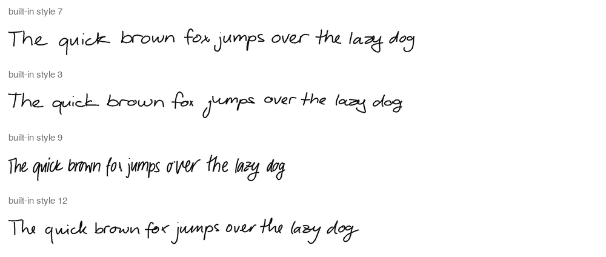
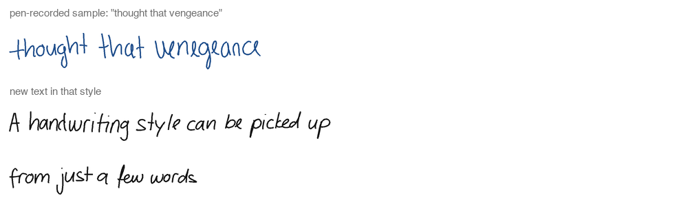
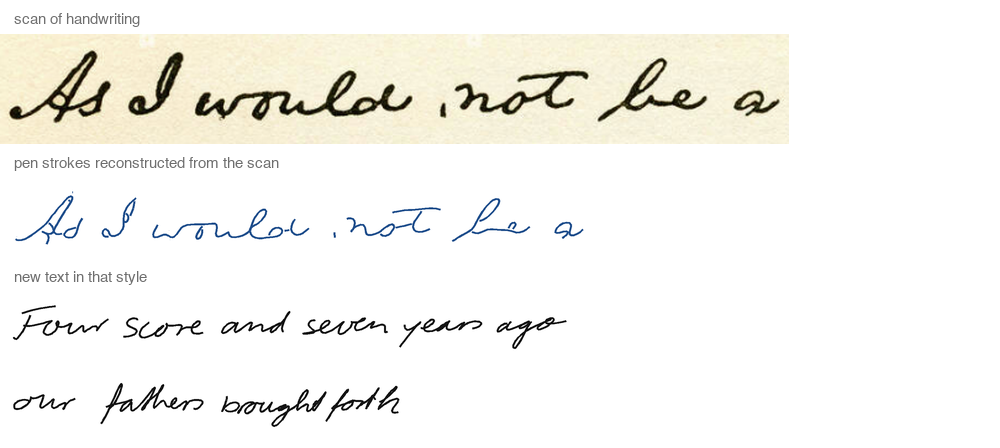

Handwriting synthesis
A neural network that writes text in handwriting, and can pick up a handwriting style from a short sample.
This is a demonstration, for informational purposes. It shows what a small, decade-old research model (Graves, 2013) can do. It is not a product, comes with no guarantees, and must not be used to pass writing off as someone else's.
Everything runs in your browser. There is no server behind this page: your text, and any handwriting sample you give it, never leave your device, and a captured style is forgotten when you close or reload the tab.
Start the demo
Starting downloads the Python runtime and the model into this tab: about 25 MB, once, then cached by your browser. After that, writing takes roughly 10 seconds for a couple of lines on a recent laptop, and several times longer on a phone or an older machine, because the network runs on your own processor.
1. Write something
Neatness trades variety for legibility: low values are loose and sometimes illegible, high values are tidy and uniform.
2. Use your own handwriting
Write a few words in the box with a mouse, finger or stylus, type exactly what you wrote, and press Use my handwriting. The model reads the sample, then tests itself by writing three short lines in that style and checking they are legible; that test takes about 25 seconds on a laptop. Your style then appears as mine in the style list above.
3. Styles from a photo of handwriting
The same model can also pick up a style from a photograph of handwriting: the image is cleaned, the ink is thinned to its centerline, and the order and speed of the pen strokes are reconstructed so the model can read it as if it had been written on a tablet. The example below shows it working.
That interface is deliberately left off this page. Copying a handwriting from a photo,
without the writer taking part, is the capability most open to misuse, and leaving it out is a small,
intentional barrier against casual forgery of things like homework, sick notes and prescriptions. It is a
speed bump, not a lock: the code is in the
public repository, and a
researcher can switch the interface on in their own copy by changing one setting
(ENABLE_IMAGE_CLONING in docs/config.js). If you do, use only handwriting that is
yours or that you have permission to use.
Image cloning is switched on in this copy. One line of a few words, cropped close to the writing. The first use downloads about 45 MB of image tools; tracing then tries five reconstructions and tests each, which takes about three minutes on a laptop.
What each mode looks like


